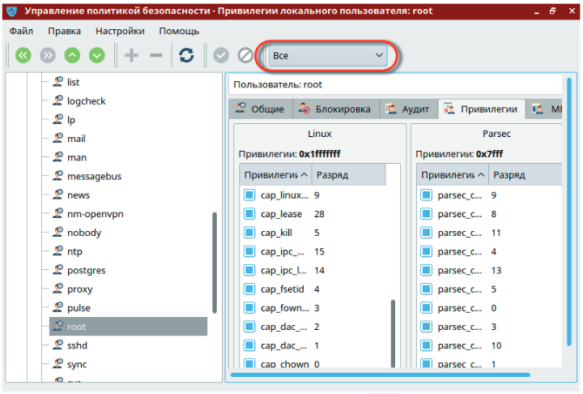

В дистрибутиве Astra Linux 1.6 Смоленск сделана новая настройка подсистемы распределения прав доступа пользователей. Теперь в момент установки дистрибутива невозможно задать пароль root. Вместо этого предлагается создать обычного unix-пользователя с именем, отличным от root (и имя admin тоже, как выяснилось, использовать нельзя). И этому первому созданному unix-пользователю будут даны привелегии root.
Однако, чтобы воспользоваться привелегиями root, такой пользователь должен предварять команды администратора командой sudo. Это может повлиять на уже написанные скрипты автоматизации, которые подразумевают классическое использование пользователя root.
Поэтому, после установки дистрибутива Astra Linux 1.6 Смоленск, нужно уметь восстановить стандартную схему работы root. А говоря простым языком- восстановить пользователя root и задать ему пароль. О том, как это делать, написано в документе "Рекомендации по установке и настройке Astra Linux 1.6". Ниже дана выдержка из этого документа.
Установка пароля и прав для пользователя root
Установка пароля для пользователя root
В ходе установки Astra Linux 1.6 не определяется пароль для пользователя root. Для определения пароля пользователю root откройте графический терминал и выполните следующие команды:
sudo su -
passwd root
Появится строка ввода пароля для root – введите пароль (пароль вводится вслепую, никаких символов не высвечивается). После ввода пароля и нажа-тия клавиши Enter появится строка повторного ввода пароля – повторите ввод пароля.
Восстановление прав пользователя root
Изначально в Astra Linux 1.6 пользователь root не имеет полный набор прав (например, он не может создавать каталоги в корне («/») или ставить пакеты). Для восстановления прав пользователя root выполните следующие действия:
1. Зарегистрируйтесь пользователем, созданным при установке системы
2. Нажмите Пуск –> Панель управления. Слева выберите раздел Безопасность, а справа Политика безопасности.
3. В открывшемся окне Управление политикой безопасности выберите слева пункт Мандатный контроль целостности и снимите «галочку» с настройки Подсистема Мандатного Контроля Целостности.
4. Подтвердите изменения, нажав на кнопку с зеленой галкой.
5. Дождитесь применения изменений.
6. Откажитесь от перезагрузки, она будет выполнена чуть позже.
7. В окне Управление политикой безопасности выберите слева пункт Пользователи.
8. На панели инструментов в верхней части окна справа поменяйте пере-ключатель с положения Обычные на Все.
9. В левой части разверните список Пользователи и выберите значение root.
10. В правой части окна выберите вкладку Привилегии и включите все привилегии, установив все «галочки» в обоих столбцах Linux и Parsec.

11. Подтвердите изменения, нажав на кнопку с зеленой галкой.
12. Выполните перезагрузку системы.
Полная версия документации прикреплена к записи.